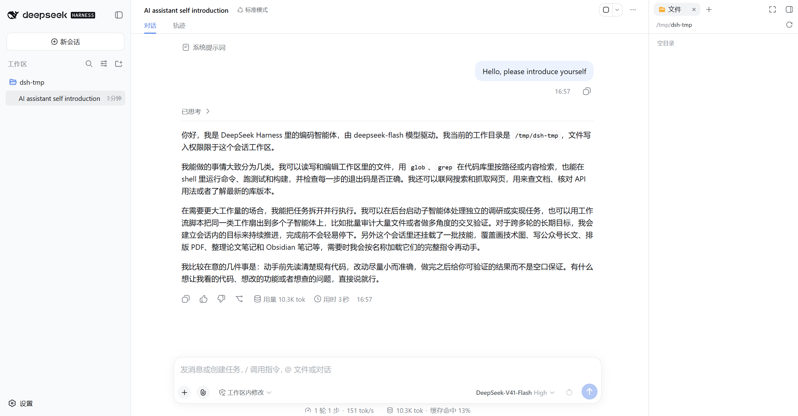

环境准备：让 AI 参与到 OS 开发中
在正式开始 Vibe Coding 之前，我们需要先建立一条完整的 AI 辅助开发流程：选择合适的大模型，准备 API，安装一个能够访问项目文件的 AI 编程工具，然后通过编译和测试验证修改结果。
认识大模型、API 与 AI 编程工具
先把几个容易混淆的概念理清楚。
大模型负责理解自然语言、阅读代码并生成回答或代码。常见的模型系列或服务品牌包括 GPT、Claude、DeepSeek、Kimi。模型通常运行在服务商的服务器上，不能简单地当作普通软件安装到电脑里。
API是程序访问模型服务的接口。API Key 是调用接口所需的凭据，API 地址（Base URL）和模型名称则决定请求发往哪里、使用哪个模型。不同服务商的配置项和计费规则可能不同，应以各自的最新文档为准。
AI 编程工具（也可以称为 Agent）负责把模型接入实际的开发流程。例如 Codex、Claude Code、DeepSeek Harness，以及 VS Code 中的 Cline、Continue 等插件，都可以在获得授权后读取项目文件、搜索代码、运行命令，并提出或执行修改。
简单来说：模型负责思考，API 负责通信，工具负责把思考落实到项目中。普通网页聊天通常不能直接访问你本地的完整项目；要让 AI 直接读取和修改 uCore，还需要一个拥有项目工作区访问能力的编程工具，并且必须由你审查它的改动。
选择一个可用的大模型
本实验不绑定特定模型。DeepSeek、Claude、GPT、Kimi 或其他模型都可以，只要它能够：
- 阅读 C 语言和操作系统代码，理解物理内存管理、页表、中断等概念；
- 根据自然语言需求生成代码；
- 通过 AI 编程工具访问项目文件并协助修改，而不只是复制粘贴代码。
不同模型在代码理解能力、生成质量、响应速度上可能有差异，但只要能完成上述基本任务，就可以用于本实验。你甚至可以在不同实验中尝试不同的模型，对比它们的表现。
如果使用海外服务的官方产品，可能需要满足服务商的注册、网络或支付要求。也可以选择在本地网络可用的模型服务；本实验重点是学习如何与 AI 协作，而不是绑定某一家产品。
获取 API
通常的流程是：在模型服务商官网注册账号，进入控制台或开发者页面，创建 API Key，查看 API 地址、可用模型和计费说明。
API Key 应当像密码一样保管。创建后请立即复制并保存到安全位置，不要写进项目代码、提交到 Git 仓库或发送给他人。若服务商支持额度限制或密钥分级，建议一并设置，避免误用产生费用。密钥是否只显示一次取决于服务商；忘记保存时通常需要重新创建。
本教程以 DeepSeek 为例：
- 开放平台：https://platform.deepseek.com/
- API 文档和价格：https://api-docs.deepseek.com/
模型名称、价格和接口路径会随服务商更新，配置时不要直接照搬过时的示例。
安装基础工具
安装任何 Agent 前，先准备 Node.js (18 或更高版本) 和 Git。Node.js 用于安装许多命令行工具，Git 用于保存修改、查看 Diff 和恢复错误操作。
先检查是否已经安装：
node -v
npm -v # npm 通常随 Node.js 一起安装
git --version
如果命令不存在，或 Node.js 版本低于所用工具要求的版本，请从官网安装 LTS 版本：
- Node.js：https://nodejs.org/
- Git：https://git-scm.com/
不同 Agent 的最低 Node.js 版本可能变化，安装前请查看对应项目的最新说明。
在wsl中：
# 安装 nvm
curl -o- https://raw.githubusercontent.com/nvm-sh/nvm/v0.39.7/install.sh | bash
# 让 nvm 命令在当前终端生效
export NVM_DIR="$HOME/.nvm"
[ -s "$NVM_DIR/nvm.sh" ] && \. "$NVM_DIR/nvm.sh"
[ -s "$NVM_DIR/bash_completion" ] && \. "$NVM_DIR/bash_completion"
# 安装并使用 Node.js 22
nvm install 22
nvm use 22
nvm alias default 22
将模型接入 AI 编程工具
你可以根据自己的工作习惯选择终端、编辑器、桌面应用或浏览器界面。在选择入口之前，先决定如何保存和切换 API 配置。
API 配置管理（可选）
如果需要在多个模型之间切换，可以使用 ccswitch 这类 API 管理工具。它可以集中保存不同服务商的 API Key、API 地址和模型配置，并按工具的格式写入或加载配置，减少手动编辑配置文件的工作。
下载地址：https://ccswitch.io/zh/download
使用第三方管理工具时，仍要确认其凭据保存位置和权限；不要把包含密钥的配置文件提交到仓库。若不使用 ccswitch，也可以按照各 Agent 的官方文档手动配置：例如 Claude Code 常用环境变量，Codex 使用 TOML 配置，其他工具可能使用 JSON 或 .env 文件，不能混用配置格式。
在wsl中下载：
curl -fsSL https://github.com/SaladDay/cc-switch-cli/releases/latest/download/install.sh | bash
echo 'export PATH="$HOME/.local/bin:$PATH"' >> ~/.bashrc
source ~/.bashrc
cc-switch
方式一：终端 Agent
如果你更喜欢在终端工作，或者想体验更加自动化的开发模式，可以使用 Claude Code、Codex 等终端 Agent。这种方式完全在命令行中操作，Agent 可以自主调用工具：读取文件、搜索代码、运行命令。适合那些本来就习惯命令行工作的人，以及想进一步探索 AI Agent 能力的学生。
以 Claude Code 为例，安装命令为：
npm install -g @anthropic-ai/claude-code
claude --version
安装后，按照 Claude Code 和所选模型服务的最新接入文档配置 API Key、API 地址和模型。也可以让 ccswitch 负责切换这些配置。配置完成后，在 uCore 项目根目录启动：
cd /path/to/ucore
claude
Windows PowerShell、Linux 和 macOS 设置环境变量的语法不同；不要直接把 export 命令复制到 PowerShell，应按照当前系统和工具文档操作。
方式二：VS Code 插件
这是最直观的方式，也是最符合本实验 Vibe Coding 开发模式的方式。简单来说就是在 VS Code 里装个插件，然后你就可以在写代码的同时跟 AI 对话，让它帮你读代码、改代码。
推荐这种方式是因为它把所有操作都集成在 VS Code 里了。你打开 uCore 项目，AI 可以直接阅读整个项目的代码，理解代码结构。当你提出需求后，AI 修改文件，你能看到清晰的 Diff（就像 Git 那样的对比视图），可以逐个文件审查改了什么。如果觉得哪里不对，可以直接拒绝某个修改。修改完了直接在终端运行 make qemu 和 make grade，看到测试结果后继续跟 AI 对话，让它改进代码。整个流程不需要切换窗口，对话历史也保留着，方便后续迭代。
在 VS Code 扩展市场搜索并安装 Cline、Continue 或其他你信任的 AI 编程插件，在插件设置中选择模型服务，填写 API Key、API 地址和模型名称，然后打开 uCore 项目目录。
以 Claude Code 为例，可以安装Claude Code for VS Code插件。
方式三：桌面应用
Codex、Claude 等工具也提供桌面应用。桌面应用适合不想一直使用终端的用户，但仍需确认所选应用是否支持当前操作系统、模型服务和项目目录访问。例如 Claude 的下载页面是 https://claude.com/download；其他产品请从各自官网获取，避免安装来源不明的软件。
方式四：浏览器 Agent
还有一种方法是浏览器里的 Agent，代表工具是 DeepSeek Harness。它会在你自己的机器上启动一个只监听本机地址的 Web 服务，你在浏览器里打开它打印出来的地址，就能看到一个完整的 Agent 界面：一边是对话，一边是文件改动，底部是它执行的命令和输出。它和方式 B 一样能自主读取文件、搜索代码、运行命令，区别在于整个过程都呈现在大家熟悉的 Web 图形界面里（就像你在浏览器中访问 DeepSeek、ChatGPT那样），改动有清晰的 Diff，能直接观察到 System Prompt、思维链、上下文内容和执行过程。
下面给出详细的操作方案：
DeepSeek Harness 是 DeepSeek 官方推出的 Agent 运行环境，提供浏览器界面。你也可以参考官方文档一键安装。
安装
npm install -g @deepseek-ai/dsh
dsh --version
在任意位置启动
与 Claude Code 这样的命令行 Agent 不同，DeepSeek Harness 是一个 Web 服务。你可以在任意目录启动它，然后在浏览器里打开它打印出来的地址。启动命令如下：
cd /path/whatever
dsh web
终端会打印一行形如 dsh web: http://127.0.0.1:3080/?token=... 的地址，并自动用默认浏览器打开。这个服务只监听本机的回环地址，不会暴露到网络上，地址里的 token 是本次启动的访问凭据，不要转发给别人。如果 3080 端口被占用，可以使用 --port 换一个：
dsh web --port 8080
配置 API Key
启动之后可以直接在 Web 界面里配置。打开左下角设置的“模型”，然后“添加提供方”选择 DeepSeek，填入你的 API Key。DeepSeek Harness 会把 Key 保存到凭据文件里，之后每次启动都会自动读取。
开始使用
DeepSeek Harness 的界面分为三部分：左边是工作区目录和 Session 列表，中间是对话区，右边是文件预览区。使用时需要先添加一个工作区（也就是项目目录），然后在对话区里输入提示词，Agent 会读取工作区里的文件，理解代码结构，然后修改文件。
作为浏览器界面的 Agent，DeepSeek Harness 的优势在于图形化的面板和输出区，让你更直观地看到 AI 的操作过程。

一套可直接采用的配置思路
如果你还没有偏好，可以按下面的顺序开始：
- 安装 Node.js 和 Git，并确认三个版本命令都能运行；
- 在 DeepSeek 开放平台创建 API Key，记录当前可用的模型和 API 地址；
- 使用
ccswitch集中配置 API，或者按照所选 Agent 的官方文档手动配置； - 选择 VS Code 插件、终端 Agent 或浏览器 Agent 之一，打开 uCore 项目；
- 先做环境验证，再开始实验任务。
两件必须养成的习惯
第一是用 Git 保护项目。开始修改前先用 git status 确认工作区状态，每完成一个小目标就提交一次；用 git diff 检查已跟踪文件的改动，必要时使用 git restore 等命令恢复。恢复命令可能丢弃未提交内容，执行前要确认目标文件和当前 Diff。
第二是控制 Agent 权限。优先只授予当前项目工作区的读写权限，并保留对删除文件、执行危险命令和访问项目外路径的确认。不要把 API Key 放进仓库，也不要让 Agent 在你不知情的情况下修改系统文件。
环境验证
配置完成之后，别急着开始做实验，先花五分钟确认整个闭环能跑通。下面三个测试从易到难，任何一个卡住了都说明环境还有问题。
第一个测试验证 Agent 能不能读到项目代码。进入 uCore 项目目录，让它读一个文件并解释：
读取 kern/init/init.c，说明 kern_init 函数的作用
第二个测试验证 Agent 能不能修改文件，以及你能不能看到和控制改动。让它做一个明确的、可撤销的改动：
在项目根目录创建一个 notes/ai-test.md，写入三行文字，说明这是环境验证的测试文件
改动完成后，去检查文件是否真的出现了。在 Claude Code 里可以直接让它 git diff 给你看；在 DeepSeek Harness 里界面会展示这次改动。确认无误后把文件删掉，或者尝试用 git checkout 还原。
第三个测试，也是最重要的测试，验证 Agent 能不能执行命令行操作。让它运行 make qemu 和 make grade，确认编译和测试命令能运行。
如果它能结合测试结果给出具体的分析，说明“修改、编译、测试、反馈、再修改”这个循环已经建立起来了，环境准备完成。
工具准备完成，下一步呢？
完成环境验证后，你就建立了一个完整的 AI 辅助开发流程。工具层面的准备已经就绪：模型可以访问，API 能够通信，开发工具能读取项目、修改文件、运行测试。
但在真正开始动手之前，还有一个更重要的问题需要思考：AI 驱动的开发和传统的编程有什么不同？
如果只是把 AI 当成“自动写代码的工具”，把提示词当成“更方便的复制粘贴”，那你很快就会遇到挫折：AI 生成的代码编译不过，测试跑不通，或者看起来能用但逻辑全错。
接下来，我们需要先理解它们之间的区别。理解了这一点，你才能真正发挥 AI 的威力。